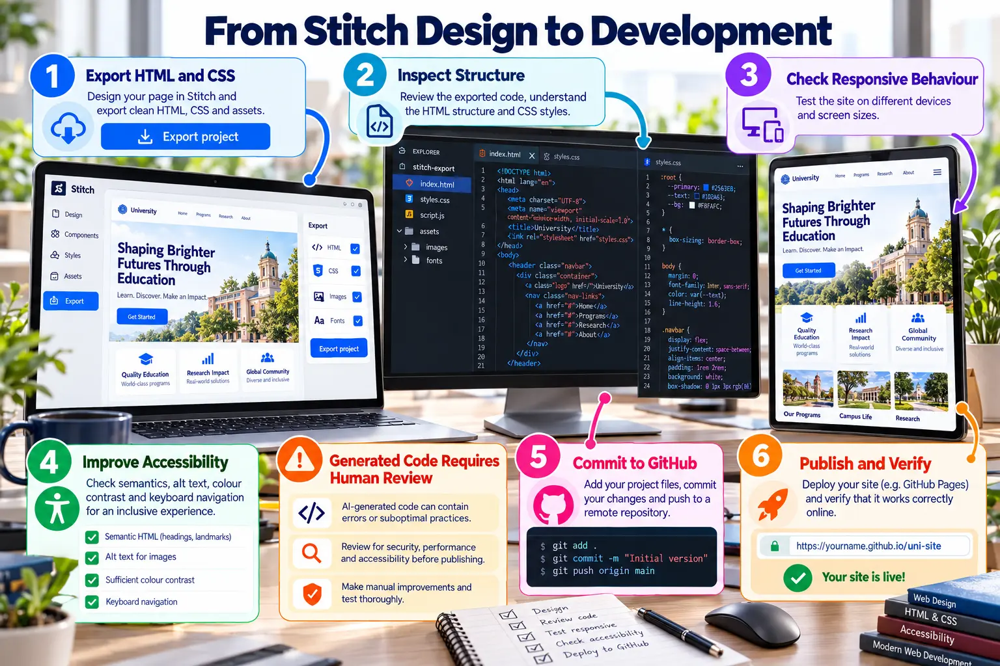

Export and Developer Handoff
Review generated HTML and CSS, improve quality, commit the project and verify publication.

Code review checklist
StructureUse semantic landmarks and headings.
Responsive behaviourTest narrow, medium and wide viewports.
AccessibilityCheck labels, alt text, focus and contrast.
MaintainabilityRemove duplication and reuse styles.
SecurityRemove secrets and validate input.
VerificationTest the public URL in a private window.
!
Generated code requires human review: never treat successful export as production approval.